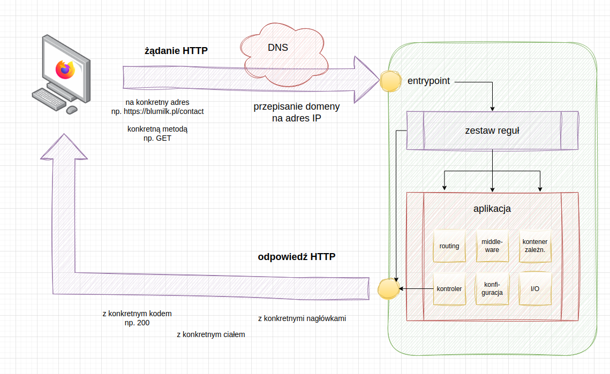
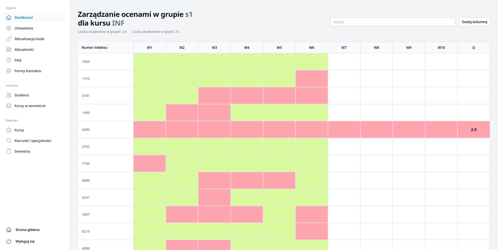

Asynchroniczne interakcje z serwerem
Projektowanie i programowanie systemów internetowych I
wykład 11 z 15

mgr inż. Krzysztof Rewak
Zakład Informatyki, Wydział Nauk Technicznych i Ekonomicznych
Collegium Witelona Uczelnia Państwowa
Blumilk sp. z o.o.
Agenda
- Retrospekcja: Synchroniczne interakcje z serwerem
- Wprowadzenie asynchroniczności
- Single-page applications
- Inne rozwiązania
- Podsumowanie
Synchroniczne interakcje z serwerem

schemat wysłania żądania i odebrania odpowiedzi HTTP
Klasyczny flow
Za klasyczny sposób odpytywania aplikacji webowej, w szczególności w formie strony internetowej, uważało się zazwyczaj podejście, w którym każde żądanie do serwera było wykonywane w sposób synchroniczny.
Podstawowe metody wysłania żądania
Można wyróżnić kilka podstawowych metod, którymi można wysłać żądanie HTTP z poziomu przeglądarki. Są to:
bezpośrednie wejście
"z zewnątrz"
"z zewnątrz"
wpisanie adresu w pasku adresu
kliknięcie w link
<a href ...przesłanie formularza
<form ...odświeżenie strony
(F5)
(F5)
window.location .href = url
Każdy z tych sposobów wysyła żądanie HTTP do serwera i czeka na jego odpowiedź. Następnie renderowana jest nowa strona na podstawie odpowiedzi lub realizowane jest przekierowanie.
Wady?
Można wyróżnić dwie podstawowe wady takiego podejścia:
- odpowiedź to w pełni zbudowany HTML, który może swoje ważyć i który trzeba za każdym razem na nowo renderować (nawet jeżeli zmienia się tylko jeden element całej strony)
- może to być powolne, szczególnie z uiksowego punktu widzenia, gdy nie można zrobić kilku akcji jednocześnie
Każda współczesna przeglądarka internetowa obsługuje JavaScript, a za jego pomocą można "pod maską" wysyłać żądania HTTP i przechwytywać ich odpowiedzi.
Najważniejsze jest jednak to, że żądanie i odebranie odpowiedzi nie musi wywołać przeładowania strony. Może stać się to "w tle".
fetch()
fetch("https://swapi.dev/api/planets/1/?format=json")
.then(response => response.json())
.then(data => {
console.log(data["name"])
})
przykład pobrania danych z API funkcją
fetch
await fetch()
const response = await fetch("https://swapi.dev/api/planets/1/?format=json")
const data = await response.json()
console.log(data["name"])
przykład pobrania danych z API funkcją
fetch
Nieblokowane I/O i możliwość równoczesnego przetwarzania
Asynchroniczność umożliwia przeglądarkom i serwerom przetwarzanie innych zadań podczas oczekiwania na odpowiedź sieci, co oznacza, że UI użytkownika pozostaje responsywne i nie jest zablokowane przez długotrwałe operacje. Można wysyłać wiele żądań równocześnie, a nie czekać na zakończenie każdego z nich pojedynczo, co może znacząco skrócić czas potrzebny na przetwarzanie wielu żądań.
Lepsza wydajność i skalowalność
Ponieważ wątki nie są blokowane przez operacje wejścia/wyjścia, aplikacje mogą obsługiwać więcej operacji równocześnie, co jest szczególnie korzystne w przypadku aplikacji o dużym ruchu i dużych obciążeń.
Lepsza obsługa interakcji użytkownika
Użytkownicy mogą kontynuować interakcję z aplikacją, nawet gdy dane są nadal ładowane, co poprawia ogólne wrażenie z korzystania z aplikacji.
Prostsza obsługa przepływów pracy
Współczesne frameworki i biblioteki JavaScript (jak React, Angular, Vue.js) są zaprojektowane do pracy z asynchronicznymi operacjami, co ułatwia zarządzanie stanem i przepływem danych w aplikacji.
Wady?
Można wyróżnić przynajmniej kilka:
- wzrasta złożoność kodu i nierzadko frontend staje się oddzielną aplikacją, którą trzeba osobno utryzmywać
- zwiększa się potencjalne problemy z kolejnością zapytań i różnymi czasami odpowiedzi na zapytania
- trudniej testować system
Case study

przykładowa aplikacja, której używanie w sposób synchroniczny byłoby mordęgą
SPA
Single-page Applications (SPA), czyli jednostronicowe aplikacje, to typ systemów webowych, które zazwyczaj ładują jedną stronę HTML i dynamicznie aktualizują jej zawartość podczas interakcji użytkownika (zamiast ładować nowe strony z serwera).
Zalety SPA
SPA poprawiają szybkość i płynność interfejsu użytkownika, ponieważ większość zasobów (HTML, CSS, skrypty) jest ładowana tylko raz podczas pierwszej wizyty. Interakcje z aplikacją wymagają mniejszej ilości przesyłania danych, co przekłada się na szybsze i bardziej responsywne doświadczenia użytkownika.
Asynchroniczne żądania w SPA
W SPA wszelkie interakcje z serwerem są realizowane przez asynchroniczne żądania HTTP. Dzięki temu strona nie wymaga odświeżenia do przetwarzania danych wejściowych i wyjściowych, co umożliwia ciągłą i płynną interakcję z użytkownikiem. Wykorzystywany do tego jest AJAX lub Fetch API.
Wyzywania związane z SPA
SPA mogą napotkać trudności z SEO, ponieważ zawartość generowana jest przez JavaScript, który nie zawsze jest właściwie indeksowany przez wyszukiwarki. Ponadto, zarządzanie stanem aplikacji i routing na stronie klienta może być bardziej skomplikowane niż w tradycyjnych aplikacjach webowych.
Przykłady popularnych SPA
Przykłady popularnych jednostronicowych aplikacji obejmują Gmaila, Google Maps, Facebooka czy X. Te aplikacje demonstrują, jak efektywne i interaktywne mogą być interfejsy użytkownika, gdy cała logika aplikacji jest zarządzana po stronie klienta.
Modularność API i jego zastosowanie wieloplatformowe
W architekturze SPA, backend skupia się wyłącznie na logice API, co sprzyja tworzeniu modułowych i łatwych w utrzymaniu systemów. Takie podejście pozwala na ponowne wykorzystanie API w różnych środowiskach, takich jak aplikacje mobilne czy inne systemy, bez konieczności duplikacji logiki biznesowej. To sprawia, że rozwój wieloplatformowy staje się bardziej efektywny i spójny.
HTMX - HTML over the wire
HTMX to biblioteka, która umożliwia ładowanie fragmentów HTML z serwera za pomocą atrybutów w znacznikach HTML. To podejście pozwala na tworzenie dynamicznych interfejsów użytkownika bez konieczności pisania JavaScriptu czy zmiany tradycyjnego backendu.
Zalety HTMX
HTMX pozwala na prostą implementację dynamicznych funkcji takich jak ładowanie zawartości, aktualizacje bez przeładowania strony i wiele więcej, bez komplikowania stacku technologicznego i bez potrzeby zaawansowanej znajomości JavaScript.
Alpine.js - minimalizm w działaniu
Alpine.js to lekka biblioteka JavaScript, która oferuje reaktywne i deklaratywne tworzenie interfejsu użytkownika, podobne do Vue.js, ale z znacznie mniejszym obciążeniem dla zasobów.
Zalety Alpine.js
Alpine.js jest idealny dla tych, którzy potrzebują prostoty i niewielkiej ilości kodu do zarządzania stanem i dynamiką na stronie, bez potrzeby dodawania pełnego frameworka SPA.
Livewire - dynamiczne aplikacje w Laravelu
Livewire to pełnoprawny framework dla Laravela, który umożliwia tworzenie dynamicznych interfejsów w PHP, z automatycznym przesyłaniem danych między frontendem a backendem bez potrzeby pisania JavaScript.
Zalety Livewire
Livewire pozwala programistom PHP na łatwe tworzenie reaktywnych komponentów, wykorzystując głównie język PHP, co może znacząco przyspieszyć rozwój aplikacji, szczególnie dla tych zaznajomionych z Laravel.
Highlights
- asynchroniczny frontend zwiększa user experience, ale zwiększa poziom skomplikowania systemu
- SPA to wygodnda opcja, jeżeli budujemy system, który też będzie musiał obsługiwać aplikację mobilna
- React, Vue.js i Angular to wciąż topka technologii frontendowych, a wszystkie się opierają na asynchronicznych interakcjach z serwerem
- podejścia takie jak HTMX czy Livewire pokazują, że jest miejsce na innowacje na frontendzie
Źródła i do dalszego poczytania